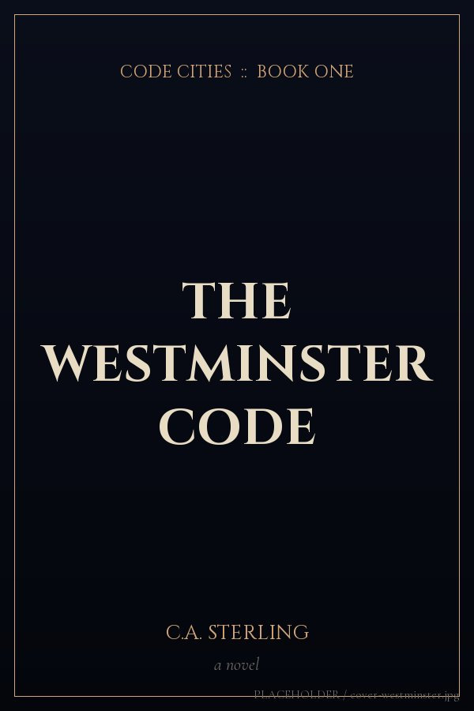

Transmission ReceivedYour dossier is on its way.
Check your inbox in the next sixty seconds. Look for an envelope marked Code Cities — Westminster Dossier, sent by C.A. Sterling.
- Not in your inbox? Check Spam or the Promotions tab and mark the message as Not spam.
- Add the sender to your contacts so future transmissions arrive cleanly.
- The four download links inside don't expire. Files are quietly updated as the investigation continues.
- One click in any email unsubscribes you, instantly. Nothing else.
Know another reader who'd want the dossier? Forward the landing page.